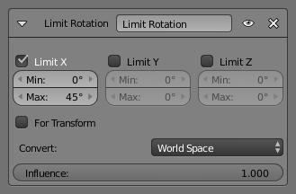

Limit Rotation Constraint 限定旋转约束¶
物体或骨骼可以绕 X、Y 和 Z 轴旋转。该约束用于通过下限和上限，限制绕每个轴向的旋转量。
值得注意的是，尽管约束限制了其视觉和渲染旋转量，约束对象的数据块仍然允许(默认)对象或骨骼的旋转量超出最小和最大值确定的范围，其旋转量可以在 变换 面板中看到。当旋转物体，并试图超出限定边界，视觉上以及渲染时，物体仍然被限定在边界内，但在内部，其旋转量仍会变化为超出限制。如果约束被移除，约束对象将跳转到其内部指定的旋转量。
类似地，如果约束对象的内部旋转超出范围，把它旋转回到限制区域，在其内部旋转回到限定阈值范围内之前，看上去会像是什么都没发生(除非你启用了下文提到的 针对形变 选项)。
为某个轴向设置相等的最小值和最大值，可以锁定约束对象绕该轴向的旋转... 尽管这样是可以的，但使用 变换属性 的轴向锁定功能可能更简单。
如果骨骼是由IK解算的，该变换无法约束骨骼。约束用于IK的骨骼的旋转，请参考骨骼属性的“逆向运动Inverse Kinematics”章节。
选项¶

限定旋转面板。
- X, Y, Z 最大值/最小值
这几个复选框分别用于启用约束对象在选定 空间(Space) 的X, Y, Z轴向的旋转限制。下方的 最小值(Min ) 和 最大值(Max) 的数值框分别用于控制其下限和上限。
注意：
- 如果最小值大于最大值，约束的效果等同于上下限相等。
- 不同于 限定位置约束 ，不能单独启用下限或上限…
- For Transform 针对形变
- 我们看到，默认情况下，即使在视觉上约束，约束对象的旋转仍然可以越界(如 变换 面板显示)。那么，启用该按钮后，这将不再可能——约束对象的变换属性也受到约束的限制。不过注意，约束并不会直接修改旋转量：需要旋转一次或两次约束对象才能生效…
- Convert 转换
- 该选项用于选择计算约束对象变换属性使用的坐标空间。